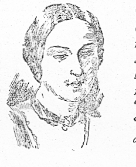

Friday, November the 14th, 2014
back to: title, date or indexes

Mrs Catherine Crowe, who wrote the best-selling Night Side Of Nature [1848], an enormous compilation of ghost stories, was found ‘in the street, clothed only in her chastity, a pocket-handkerchief, and a visiting-card. She had been informed, it appeared, by the spirits, that if she went in that trim she would be invisible’,
from The Spiritualists : The Passion For The Occult In The Nineteenth And Twentieth Centuries by Ruth Brandon (Weidenfeld & Nicolson, 1983)